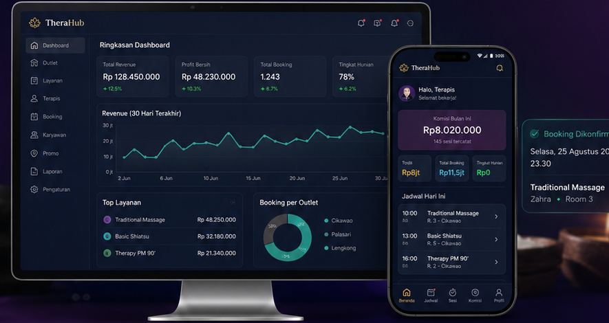
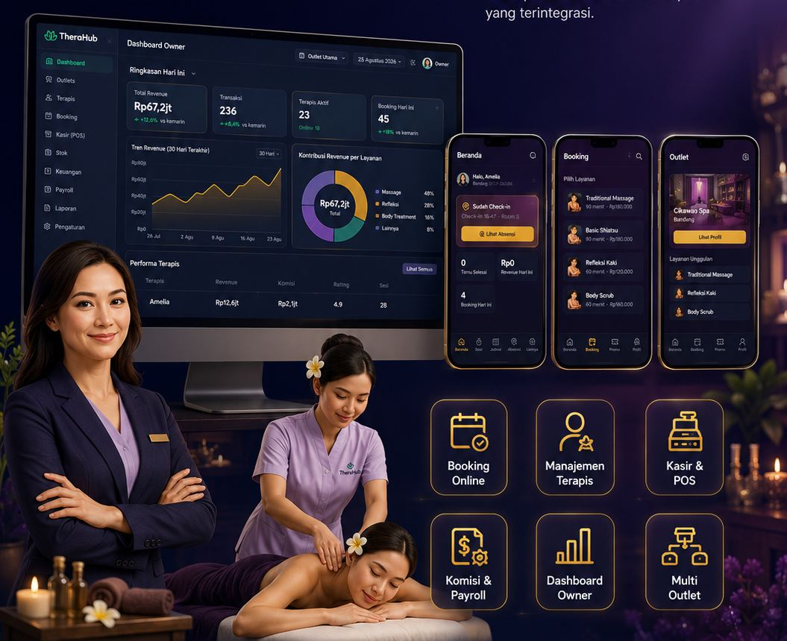

Untuk tim di lapangan: pekerjaan harian jadi ringan dan tercatat otomatis. Untuk manajemen dan pemilik: biaya terkendali dan setiap keputusan punya datanya. Butuh sesuatu yang khusus untuk outlet Anda? Kami siap menyesuaikan.
Tamu bisa booking sendiri dari HP-nya, atau dicatat kasir saat datang langsung. Semua masuk ke satu kalender yang sama.
Tamu yang tidak datang? Booking-nya ditandai otomatis setelah 15 menit, jadi jadwal dan ruangan langsung bisa dipakai tamu berikutnya.
Saat tamu tiba, kasir tinggal memilih ruangan yang kosong — daftar ruangan selalu menunjukkan kondisi saat itu juga, jadi tidak ada tamu yang diarahkan ke ruangan yang ternyata terisi.
Manager dan kasir melihat semua sesi yang sedang berjalan: siapa terapisnya, di ruangan mana, dan kapan selesai.
Tamu ingin menambah durasi? Terapis cukup mengajukan dari HP, kasir menyetujui, dan biayanya otomatis masuk ke tagihan. Tidak ada tambahan yang terlewat atau tercatat dobel.
Satu layar untuk semua: layanan, tambahan (add-on), produk, minuman, kode promo, lalu bayar dengan tunai, QRIS, kartu, atau gabungan.
Tentukan tarif komisi per layanan — nominal tetap atau persentase. Begitu tamu membayar, komisi terapis langsung tercatat: untuk layanannya, perpanjangannya, sampai tambahannya.
Terapis yang mengajak temannya bergabung bisa mendapat bonus dari setiap sesi temannya — dihitung otomatis setiap gajian, tanpa perlu diingat-ingat.
Gaji pokok, tunjangan, komisi, bonus, THR, potongan, tabungan, sampai cicilan — semua komponen bisa diatur sesuai kebiasaan outlet Anda, lalu slip gaji terbit untuk setiap terapis.

Pendapatan hari ini, layanan paling laris, kinerja tiap terapis, dan pengeluaran outlet — tampil langsung dari transaksi yang terjadi, bukan rekap yang menunggu akhir minggu.
Setiap rupiah yang keluar punya jejak dan penanggung jawab.
Data operasional berubah menjadi bahan keputusan bisnis.
Pendapatan, komisi, pengeluaran, dan kontribusi terapis per periode — semuanya bisa diunduh untuk diolah lebih lanjut atau dilampirkan ke laporan keuangan.
Manager melihat outletnya, pemilik melihat seluruh cabang. Semua angka dihitung dari transaksi, absensi, dan penilaian yang benar-benar terjadi.
| Terapis | Tamu ▼ | Hadir | Telat | Nilai tamu | Nilai mgr |
|---|---|---|---|---|---|
| Amelia | 86 | 96% | 1× | ★ 4,9 | ★ 5 |
| Zahra | 79 | 100% | 0× | ★ 4,8 | ★ 5 |
| Dewi | 71 | 92% | 3× | ★ 4,6 | ★ 4 |
| Maya | 64 | 88% | 2× | ★ 4,7 | ★ 4 |
Contoh tampilan dengan angka ilustrasi. Laporan aslinya — lengkap dengan grafik tren, kinerja terapis, dan pratinjau cetak — bisa dicoba di simulasi demo Royal Spa.
Tren pendapatan, layanan terlaris, booking per jam, dan perbandingan cabang tampil dalam grafik, jadi pola bisnis terlihat sekilas tanpa menghitung tabel.
Setelah kunjungan, pelanggan memberi bintang dan komentar dari HP-nya. Penilaian tidak bisa diubah setelah terkirim, jadi yang Anda baca adalah pendapat aslinya.
Hari ini, minggu ini, bulan lalu: ganti periode dan laporan langsung menyesuaikan. Pemilik bisa berpindah antar cabang dari halaman yang sama.
Kelola ruangan dan menu layanan Anda: durasi, harga normal, harga member, harga akhir pekan, hingga pilihan tambahan di tiap layanan.
Profil lengkap tiap terapis — keahlian, tingkatan, dan foto untuk ditampilkan ke pelanggan. Data pribadi hanya bisa dilihat yang berhak.
Terapis mengajukan cuti, sakit, libur, atau izin masuk siang dari HP; manager tinggal menyetujui. Jadwalnya langsung menyesuaikan.
Kamar belum siap? Terapis cukup memindai kode QR di pintu kamar lain dari HP-nya. Data kamar langsung diperbarui dan kasir melihat perubahannya.
Terapis absen dari HP saat tiba di outlet. Ada pengingat sebelum jam masuk, dan manager bisa melihat sekilas siapa yang sudah hadir hari ini.
Minyak, handuk, produk jualan — stok berkurang otomatis saat terpakai atau terjual, dan ada peringatan sebelum kehabisan. Pindah stok antar cabang pun tercatat.
Belanja harian outlet tercatat dan disetujui lewat aplikasi, jadi uang kas selalu jelas ke mana perginya.
Buat promo untuk menarik pelanggan — kodenya langsung bisa dipakai di kasir dan potongannya terhitung otomatis.
Logo, warna, dan nama usaha Anda sendiri — di aplikasi, di struk tagihan, sampai di website outlet. TheraHub bekerja di belakang layar.
Pajak, service charge, jam operasional, sampai seberapa jauh ke depan tamu boleh booking — semuanya mengikuti kebijakan outlet Anda.
Pelanggan yang bisa booking jam 10 malam dari rumahnya adalah pelanggan yang tidak pindah ke tempat lain.

Setiap pagi, aplikasi menyusun poster terapis yang bertugas hari ini — lengkap dengan foto dan nama — otomatis mengikuti jadwal: yang cuti atau libur tidak ikut tampil.
Pelanggan tahu terapis favoritnya masuk hari ini — dan langsung booking.
Data tiap bisnis tersimpan terpisah dan tidak bisa dilihat pihak lain. Tersimpan aman di cloud — tidak hilang saat komputer kasir rusak.
Kasir melihat urusan kasir, terapis melihat jadwal dan komisinya sendiri, dan hanya pemilik yang melihat angka keseluruhan bisnis.
Setiap angka di laporan berasal dari transaksi yang benar-benar terjadi. Kalau belum ada datanya, TheraHub tidak mengarang angka.
Jadwalkan demo — kami tunjukkan satu transaksi lengkap dari booking sampai slip gaji.